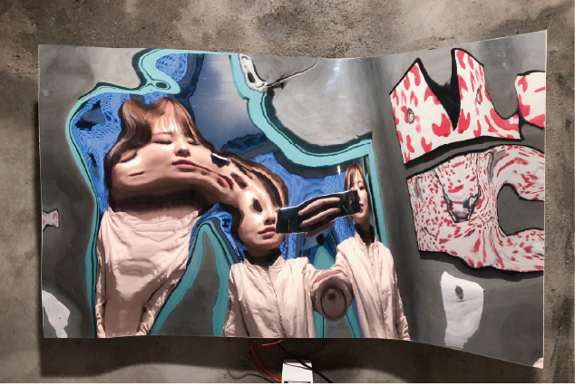

What if
When I came to the Netherlands, there was nothing quite different about it. For example, I could deliver food with an application, there is a night shop, order things from online and it delivered quite fast. If I want to try Korean food, I could get enough ingredients easily. Probably the hospital was the one that made me feel ‘Oh, it is different’. This thought was brought, maybe because I lived in a hospital oversaturated country or maybe I'm a person who loves to go to the hospital. (For reference, I go to the dentist every 3 months, and go regularly to the otolaryngologist and ophthalmologist in the spring or autumn.)
Because of allergies and nasal septum deviations, I struggle with a stuffed nose. Feeling like there is no basic human right for me in spring and autumn when pollen is. If I do not immediately treat a stuffy nose and leave it, I know what will happen, first it starts to sit in the face bones then press the tooth nerves. After facing this situation couple of times in my lifetime, I tend to quickly fix the stuffy nose before the situation gets serious.
In the fall of 2019, when I had a stuffy nose, I wanted to see a doctor. And after waiting for about 10 days, I was able to meet General practice on the Zernike campus. (In Korea, if I want to see a doctor, I don’t need any reservation but just go to hospital and wait about 30 minutes, then I can get treatment.) Explaining my symptoms, he suggested me to get enough rest and drink warm tea. At the moment I was really confused and asked him immediately to prescribe antihistamines and asked if he could do an allergy test. But he asked me to mark the day that I get sick on calendar, and to be cautious on next year. It was the moment when I realized that I had nested in a country of autoimmunity and natural healing. And in the long run, I thought this way of treatment would be better, but it was difficult for me to adjust to this system right away. As I have a body which is used to have four or five pills for a cold. I started taking medicine late, or maybe it was due to pollen that is lethal to me, I probably lived for about a month with almost no sense of smell. My head kept hurting because of my stuffy nose, I didn't feel while eating, and had trouble breathing properly while sleeping. I felt like I had lost all the joyful things in my life.
And suddenly I came with a lot of questions like, ‘What if the world's sense of smell disappears? How can we feel the scent on an object or anywhere? And if the sense of smell disappears, what senses can we use to feel it? If we can feel the sense of smell using different senses, what kind of sense is possible?’

I've done two works about ‘what if’ in 2017, why am I specifically working on this?
-About the imagination of “assuming” the situation among imaginations.-
I'm trying not to fall asleep too early, especially when I'm busy, because the time of night seems evaporates only for sleeping purpose. Spending time watching movies, watching YouTube, or reading books. Find some stories to involve. Like, what if I was in that situation? or how would it be like? When I was younger than I am now, walking on an imaginary cloud that won't happen, felt me somewhat pathetic of myself having such a time. But in reality, I've always been busy and really too realistic, so I decided to allow some fancy and imagination for my mental health. When I was younger than 6 years old, I had spent a whole day just daydreaming. However, as adults, people think that daydreaming and imagine are waste of time. I also thought so. Because I didn't want to be an ugly duckling among them. Challenges are replaced with safety. Leave the things untouched and try not to think about it.
And when I was dull in this life, I was given the time to change my mind. I just got time to do my work. What kind of work did I make time for? I looked at my diary. And it was very easy to find the material, What if things alive? It's ridiculous in a way, but WHAT IF it is? I wanted to make this sentence be real. It seemed that I wouldn't have time to visualize it in future. And while watching rally of claiming the resignation of the president, it would be nice if the lights (light bulbs) would also catch up its brightness as if the fires were moving.
The word ‘Imagination’ is regarded as a virtue in the modern society without much disagreement. By freely imagining and realizing this, science and technology could develop as much as this, and various arts and cultures we enjoy were created based on imagination. However, it is relatively recent that I began to look at imagination positively. Descartes, who emphasized willpower so much, was a strong guard against imagination. Even when acknowledging the role, it was limited to a very auxiliary level.
Here's a brief explanation of the concept I had for imagination. According to Bashlar, we have largely misunderstood imagination as the ability to form images, but imagination is not so much the ability to liberate us from the original image and transform images. Not image formation, but image transformation is the key to imagination. In other words, imagination is not the power to create something new, but the power to change something from one thing to another.
I think we live by attaching meaning to everything. That's a bad thing, that's a good thing, this brings me happiness, or that makes me miserable. If all things are meant by individuals, it tells us the unexpected truth, that everything has no meaning of its own. What does the chair mean? What about air? water? animals? humans? me? The truth means nothing. And it's actually a great blessing for each of us to have. This means that each of us has the power to decide and create our own lives and the world. So, everyone can live their own lives and have their own worldviews. * The embodied mind chapter6. Page 217
Bashlar's cultural complex means the complex of imagination, which is the association of culturally learned information. Pointing to an inspiration or fresh idea from an imaginary subject, we think it is the result of our own image or imagination. The fact is that it is the result of associative action created by information composed of images or experiences that you have seen since childhood.
I put in my work the time I live and remember. And because of the belief that it will continue to exist in my work through imagination, I don't think my imagination is something that I should keep it as a secret.
Reference
Gaston Bachelard's Philosophy of Imagination: An Introduction, Edward K. Kaplan, Philosophy and Phenomenological Research, 1972
The embodied mind -cognitive science and human experience, Francisco J. Varela, 1991